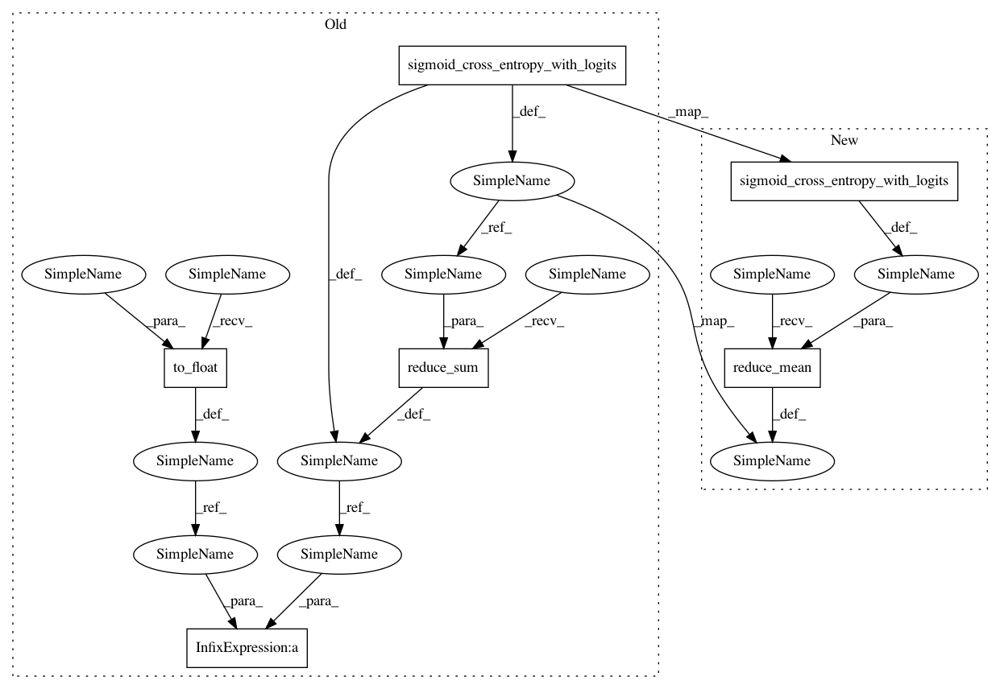

ecbe066e40882b166401b70ae9c4f1d535c93b12,texar/losses/adv_losses.py,,binary_adversarial_losses,#,12
Before Change
(scalar Tensor, scalar Tensor): (generator_loss, discriminator_loss).
real_logits = discriminator_fn(real_data)
real_loss = tf.nn.sigmoid_cross_entropy_with_logits(
logits=real_logits, labels=tf.ones_like(real_logits))
num_real_data = tf.shape(real_loss)[0]
ave_real_loss = tf.reduce_sum(real_loss) / tf.to_float(num_real_data)
fake_logits = discriminator_fn(fake_data)
fake_loss = tf.nn.sigmoid_cross_entropy_with_logits(
logits=fake_logits, labels=tf.zeros_like(fake_logits))
num_fake_data = tf.shape(fake_loss)[0]
ave_fake_loss = tf.reduce_sum(fake_loss) / tf.to_float(num_fake_data)
disc_loss = ave_real_loss + ave_fake_loss
if mode == "min_fake":
gen_loss = - ave_fake_loss
elif mode == "max_real":
fake_loss_ = tf.nn.sigmoid_cross_entropy_with_logits(
After Change
(scalar Tensor, scalar Tensor): (generator_loss, discriminator_loss).
real_logits = discriminator_fn(real_data)
real_loss = tf.reduce_mean(tf.nn.sigmoid_cross_entropy_with_logits(
logits=real_logits, labels=tf.ones_like(real_logits)))
fake_logits = discriminator_fn(fake_data)
fake_loss = tf.reduce_mean(tf.nn.sigmoid_cross_entropy_with_logits(
logits=fake_logits, labels=tf.zeros_like(fake_logits)))
d_loss = real_loss + fake_loss
In pattern: SUPERPATTERN
Frequency: 3
Non-data size: 6
Instances
Project Name: asyml/texar
Commit Name: ecbe066e40882b166401b70ae9c4f1d535c93b12
Time: 2017-12-21
Author: zichaoy@cs.cmu.edu
File Name: texar/losses/adv_losses.py
Class Name:
Method Name: binary_adversarial_losses
Project Name: asyml/texar
Commit Name: ecbe066e40882b166401b70ae9c4f1d535c93b12
Time: 2017-12-21
Author: zichaoy@cs.cmu.edu
File Name: texar/losses/adv_losses.py
Class Name:
Method Name: binary_adversarial_losses